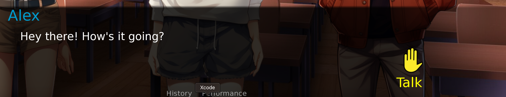
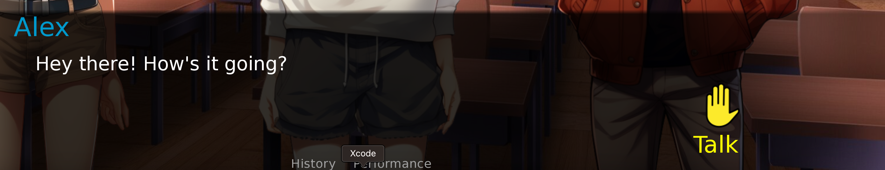

Scene Architecture Design (SAD)
The goal of this architecture is to leverage the power of Generative Artificial Intelligence (GAI) to set up an ideal scenario for a student to be placed into, so that they can learn social skills through first hand experience with AI-generated characters in the scene.
We distill the research done during our domain knowledge collection phase into a set of social skills (IEPs). Additionally, each skill has a set of metrics used to measure and evaluate a student’s performance on a task that demonstrates mastery of the skill. These two make up the baseline input to our system. When using our application, these details will be provided by the professional working with the learner. A detailed explanation of our pipeline (code as well as UI) and design choices are covered in the following sections.
Scene Generation

The first step of our pipeline is to set up the scenario in which the student will be participating. Using the knowledge of the social skill that needs to be learned and the corresponding goals or metrics that need to be tracked, our first AI component generates all of the required Scene Data. These, at bare minimum, include the following:
Overview: A high-level description of the events or interactions that should occur over the course of the scenario revolving around the learner. Miscellaneous information about the events such as topics, interests, etc. are added to make the scenario more defined as well as more interesting.
Location: The place or setting where the events in the scene occur. Ideally, a scene could contain multiple locations. However, for baseline simplicity, we restricted it to a single location. We also use the location to use an appropriate background for the scenario (from among a predefined set of assets) as can be seen in the image above.
Characters: The final basic requirement for our scenario is the definition of the participants in the scene, other than the learner. For each participant, we need the following:
- Name: Having names lets the learner address and differentiate between the speakers
- Gender: This is needed in order to display appropriate assets and introduce a visual dimension to the characters
- Personalty: The most important requirement for the characters in our scenario is this description about their personality traits and behavior as this would determine how the characters would interact with each other, as well as the learner, and would also determine their wording choice.

Introductory Sequence
Having the scene generated, the learner must go through a preliminary sequence where they are introduced to what the scenario is about, who the other participants are, what they are like, their interests and, most importantly, how they should interact with each participant. The professional will accompany the learner through this initial process so that they have everything they need to navigate through the upcoming scene.

Narration
This is where the scene actually begins. Another piece of the Scene Data generated by our system is narration.
Some scenarios may have the learner approaching a character and initiating a conversation with them. In this case, the student doesn’t necessarily need to have too much context about the other actors in the scene and may not need a narration–it is still useful though since it can be used to describe what the other characters were doing before the learner entered the scene, for example, if two of the other characters were having a chat amongst themselves.
The primary use case of the narration, however, is to allow the learner to be dropped into the scene at any point; the learner’s character could have already been participating in a discussion when one of the actors said something that lead to an argument–the learner could be dropped into the scene right after the argument, with the goal of resolving the conflict. Having a narration here would allow us to provide this context to the user.

User Input
We have designed our conversation architecture such that the learner is not forced to speak at any specific point. Instead, we have a “Raise Hand” button that lets the learner inject their response after any message. If the learner stays silent, the conversation keeps unfolding as the other characters try to make up for the lack of the learner’s input.
 

Scene Manager
While the Scene Generator has set up the overall context of the scenario, this alone is not sufficient to provide a controlled experience to teach the learner a social skill. What we need is more fine-grained articulation about what’s going on at the current moment and the near future of the interaction. This “Short-term Event Context” is what allows our system to guide the interaction in the most appropriate way. For example, if the scene started out with an argument and the learner attempted to resolve the dispute, depending on how the user performed, we can direct the conversation towards a resolution or in the opposite direction by setting the Short-term Event Context accordingly.
Similar to how we have this Short-term Event Context to control the scene, we also need something similar to be able to control each individual character. Accordingly, we introduced a “Role” for each character that describes how the character must act in the immediate interactions of the conversation.
The Scene Manager of our system is, therefore, responsible for handling the scene and characters by means of the Short-term Event Context and Character Roles, respectively.
Generating the Conversation
The central piece of our scene is the ongoing conversation. While the learner will provide their bits, we need another AI component to generate the responses for all other characters.
Our Conversation Manager is responsible for this job of generating a window of N next messages for the conversation. It does so based on the Scene Data it has access to, especially information about the characters and their personalities. The Scene Manager controls the messages generated by the Conversation Manager through the Short-term Event Context and Character Roles.

Goal Tracking
As mentioned earlier, each skill is associated with a set of goals/metrics that evaluate how the learner is performing. These must, therefore, be tracked every time the learner participates in the conversation.
The (AI) Goal Tracker does this by evaluating a window of past messages–all the non-learner messages, up to the current learner message–on each of the metrics added during the input phase. It then provides scores (-1, 0, 1) for each. These can be viewed in the “Performance” screen of our app and also in the final report provided at the end of the scene.
Ending a Scene
There are a few different cases where we would want the scene to end:
- If the learner is doing really great and is racking up points on the goals/metrics being tracked
- If the learner is performing too poorly or is being rude, we don’t want to drag out the conversation
To end the scene, the Scene Manager determines a suitable reason for bringing the conversation to an end and setting the Short-term Event Context. It will also determine which character(s) will be responsible for ending the scene by setting the Character Roles. For example, if the scenario is about initiating a conversation with a stranger on the bus, if the student is making the stranger uncomfortable, we can end the interaction by making it so that the stranger’s destination has arrived and they need to get off the bus.
Summary
We have covered the entire pipeline of our architecture right from the initial inputs to the generation of the scene, the interactions and the final conclusion of the scenario. The diagrams below summary the details into two phases:
- Setting up the scene by providing the social skill and goals/metrics: a professional will be in the driver seat as they instruct and work with the learner
- The ongoing scene interactions: where the learner is the one controlling the UI while the professional watches over and guides them.